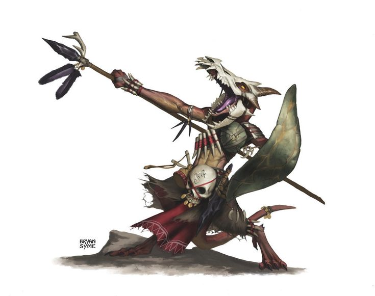

DAAK 'Gueule de Wyrm'
Personnage¶
Race : Kobold draconique
Classe : Guerrier
Niveau : 1 (BM +2)
Points de vie : 13
Vitesse : 30 ft.
| FOR | DEX | CON | INT | SAG | CHA |
|---|---|---|---|---|---|
| 18 (+4) | 13 (+1) | 16 (+3) | 10 (±0) | 9 (-1) | 16 (+3) |
| ◉ +6 | ◎ +1 | ◉ +7 | ◎ ±0 | ◎ -1 | ◎ +3 |
| Compétences | |
|---|---|
| ◎ Acrobaties (Dex) : +1 | ◉ Investigation (Int) : +2 |
| ◎ Arcanes (Int) : ±0 | ◎ Médecine (Sag) : -1 |
| ◎ Athlétisme (For) : +4 | ◎ Nature (Int) : ±0 |
| ◎ Discrétion (Dex) : +1 | ◎ Perception (Sag) : -1 |
| ◎ Dressage (Sag) : -1 | ◎ Persuasion (Cha) : +3 |
| ◎ Escamotage (Dex) : +1 | ◎ Religion (Int) : ±0 |
| ◎ Histoire (Int) : ±0 | ◎ Représentation (Cha) : +3 |
| ◉ Intimidation (Cha) : +5 | ◉ Survie (Sag) : +1 |
| ◉ Intuition (Sag) : +1 | ◎ Tromperie (Cha) : +3 |
Fiche récapitulative pour ceux qui ont la flemme (Merci Gemini !)
Vous êtes Daak, un surprenant kobold Chevalier de Solamnia, qui a transformé la peur de son peuple en une discipline de fer et dont les rugissements tactiques transforment le chaos du combat en une symphonie de victoire pour sa "meute".
Objectif pour la session :
En tant que Chevalier, votre devoir est d'aider ceux qui en ont besoin et de combattre le mal. Votre mission personnelle est de prouver que la discipline et le courage d'une meute bien soudée, peu importe sa taille ou sa composition, sont la plus grande force qui soit.
Parlez comme un Sergent Draconique : Votre voix est un aboiement puissant et vos phrases sont des ordres courts et directs. Utilisez votre aptitude "Hurlement Draconique" aussi souvent que possible, non seulement pour son effet mécanique, mais pour le roleplay. Vous êtes le leader tactique, même si vous êtes le plus petit.
La Meute avant Tout : Votre style de combat "Interception" définit votre rôle. Vous êtes là pour protéger vos compagnons plus grands mais (à vos yeux) plus fragiles. Mettez-vous physiquement devant eux, prenez les coups, et utilisez vos compétences pour assurer la survie du groupe. Chaque compagnon est un "écaille-frère".
Le Kobold sous l'Armure : N'oubliez pas vos quirks. Penchez la tête quand vous êtes perplexe face aux coutumes des "grandes personnes". Donnez des petits coups de coude pour attirer l'attention. Et surtout, ramassez discrètement les petits objets brillants. Votre discipline de chevalier n'a pas effacé votre nature de kobold.
Maîtrises¶
Armure : Armures Légères, Armures Moyennes, Armures Lourdes, Bouclier
Armes : Armes Simples, Armes Martiales
Outils : Aucun
Langues : Commun, Draconique, Gnome, Infernal
Description¶
Âge : 13 ans
Taille : 85 cm (taille P)
Poids : 15 kg
Malgré sa petite taille de kobold, Daak projette une silhouette étonnamment féroce, une mosaïque de dévotion draconique et de ressources tirées d'un monde hostile. Son corps est couvert d'écailles robustes d'un brun-rouille, et ses muscles sont noueux, définis par une agilité et une endurance constantes. Ses yeux, deux billes d'un jaune brillant, brûlent d'une intensité qui dément la couardise habituelle de son espèce.
Son équipement, un bric-à-brac de trophées et de nécessité, raconte sa propre histoire :
- Le Heaume-Wyrm : Sa tête n'est pas coiffée d'un simple casque, mais de la partie supérieure du crâne d'un jeune wyrm. Le museau osseux et denté descend sur son visage comme une visière menaçante, et ses propres yeux perçants brillent depuis l'ombre des grandes orbites vides. Les petites cornes naissantes du jeune dragon s'élancent vers l'arrière, lui donnant un profil à la fois noble et sauvage. Le crâne, maintenu par un système de lanières de cuir, n'est pas seulement une protection ; c'est un masque de guerre, un symbole de sa foi et l'incarnation de son nom, "Gueule-de-Wyrm". Chaque cri de guerre qu'il pousse semble résonner à travers la gueule du dragon qu'il porte.
- Le Bouclier-Carapace : À son bras gauche est sanglée une grande carapace de tortue, polie par l'usage mais marquée de cicatrices de batailles. Ses motifs hexagonaux naturels forment une mosaïque de protection que ni la rouille ni le temps ne peuvent altérer. C'est un bouclier à la fois léger et incroyablement résistant, un fragment du monde naturel transformé en rempart.
- La Lance : Dans sa main droite, il ne tient pas une épée ou une hache, mais une lance. L'arme semble aussi primitive que redoutable. Le manche est un bois durci au feu, droit et solide. La pointe n'est pas en métal, mais en un grand éclat d'obsidienne, taillé avec une précision mortelle, dont les arêtes noires et vitreuses brillent d'une lueur malveillante. Des lanières de cuir et peut-être une dent de dragon solitaire sont nouées juste en dessous de la pointe.
Le reste de son armure est composé de pièces de cuir durci et de peaux cousues ensemble, protégeant ses points vitaux sans entraver sa vitesse. Chaque élément de son apparence, du visage de dragon qu'il porte à la pointe de sa lance, crie la même chose : Daak n'est pas un serviteur rampant. Il est le héraut d'un esprit draconique, un survivant qui a appris à porter la majesté et la fureur de ses idoles comme une seconde peau.

Aptitudes¶
Aptitudes de Race¶
Vision dans le Noir. Vous pouvez voir à 60 ft. dans une zone de lumière faible comme vous verriez avec une lumière vive, et dans le noir comme avec une lumière faible. Vous ne pouvez pas discerner les couleurs dans l'obscurité, seulement les nuances de gris.
Hurlement Draconique. Pour une action bonus, vous laissez s'échapper un grondement à vos ennemis à 10 ft. Jusqu'au début de votre prochain tour, vous et vos alliés avez l'avantage à vos jets d'attaque contre les ennemis qui ont pu vous entendre. Vous pouvez utiliser ce trait un nombre de fois égal à votre bonus de maîtrise, et vous regagnez toutes les charges utilisées lorsque vous utilisez un repos long.
Défiance. Vous avez l'avantage aux jets de sauvegarde pour éviter ou terminer la condition apeuré sur vous-même.
Aptitudes de Classe¶
Interception¶
Lorsqu'une créature que vous pouvez voir touche une cible, autre que vous, à 5 ft. de vous avec une attaque, vous pouvez utiliser votre réaction pour réduire les dégâts que prend la cible de 1d10 + votre bonus de maîtrise dégâts. Vous devez manier un bouclier ou une arme simple ou martiale pour utiliser cette réaction.
Second Souffle¶
Vous possédez une endurance plus élevée que la moyenne, ce qui vous permet de vous protéger de la douleur. Pendant votre tour, vous pouvez utiliser votre action bonus pour regagner un nombre de points de vie égal à 1d10 + votre niveau de guerrier.
Une fois que vous avez utilisé cette aptitude, vous devez finir un repos avant de pouvoir l'utiliser à nouveau.
Équipement¶
- Une armure de cuir et un arc long avec 20 flèches
- Une épée longue et un bouclier
- Une lance
- Une arbalète légère et 20 carreaux
- Un sac d'explorateur
- Un sac de chasseur de monstres
- Une clé de la crypte familiale
- 1 Pièce d'Or
Historique¶
La vie de Daak a commencé par un "Yip !". C'était le son de son terrier, le langage universel de sa race. Un "Yip !" de soumission quand le jeune dragon vert, Veridiax, exigeait son tribut de babioles. Un "Yip !" d'alerte quand une ombre inconnue passait devant l'entrée de la grotte. Un "Yip !" de douleur quand un tunnel s'effondrait. Daak était un kobold exemplaire : il était petit, il était discret, et il avait peur.
Il connaissait les règles ancestrales qui maintenaient sa race en vie. Règle numéro un : ne jamais être seul. Règle numéro deux : les grandes personnes sont des monstres. Règle numéro trois : la meute est plus forte que l'individu. Il était un maillon dans la chaîne, une écaille dans la grande marée reptilienne, et il croyait en la sagesse de ces règles. Il croyait en la force de la meute.
Puis, un jour, la meute s'est brisée.
Ils sont arrivés comme le tonnerre, les grandes personnes. Un paladin en armure étincelante, un mage dont les doigts crépitaient de lumière, un barbare dont le cri de guerre faisait trembler la pierre. La panique fut instantanée. Ce ne furent pas les épées qui tuèrent son peuple. Ce fut la peur.
Daak, du fond d'une alcôve où il s'était jeté, a tout vu. Il a vu des pièges ingénieux, conçus pour des semaines, rester inertes parce que les kobolds qui devaient les déclencher avaient fui leur poste. Il a vu des embuscades parfaitement planifiées se dissoudre en une débandade chaotique. Des guerriers plus forts et plus braves que lui se sont fait tailler en pièces parce qu'ils couraient dans toutes les directions, leurs glapissements de terreur remplaçant les aboiements tactiques qu'ils avaient appris. Leur chef, un champion kobold du nom de Skerrit, a tenté de rugir des ordres, mais sa voix s'est étranglée en un couinement de panique lorsqu'une boule de feu a explosé près de lui.
La meute n'existait plus. Il n'y avait plus que des individus terrifiés, et les individus se faisaient massacrer.
Daak a fait ce que les kobolds font le mieux : il s'est caché. Il a attendu, tremblant, écoutant les cris se transformer en silence. Quand il est enfin sorti, le terrier était un tombeau. Il était seul. La règle numéro un était brisée.
Dans le silence et la désolation, une pensée froide et claire a germé dans son esprit. Les grandes personnes avaient gagné non seulement parce qu'elles étaient fortes, mais parce qu'elles étaient une meilleure meute. Une meute de cinq valait mieux qu'une meute de cinquante, car la leur n'avait pas cédé à la peur. Il a alors pensé à Veridiax, le dragon. Ce n'était pas sa taille ou son souffle empoisonné qui le rendait terrifiant. C'était sa certitude. Sa volonté d'airain. Un dragon n'a jamais peur.
Ce jour-là, Daak a compris. La peur était une maladie, et le "Yip !" en était le symptôme. Il a juré, au milieu des corps des siens, que plus jamais il ne laisserait la peur détruire sa meute.
Il a commencé à s'entraîner. Chaque jour, dans les tunnels vides, il s'exerçait à transformer le glapissement de ses poumons en quelque chose de nouveau. Sa gorge était à vif, sa voix se brisait, mais il persévéra. Le "Yip !" devint un aboiement. L'aboiement devint un grondement. Et un jour, un véritable rugissement, bref mais puissant, jaillit de sa petite poitrine, faisant vibrer les stalactites. Ce jour-là, il se baptisa "Gueule-de-Wyrm".
Il a quitté les ruines de son passé, non pas en tant que réfugié, mais en tant que fondateur. Il ne cherchait pas un nouveau maître, mais une nouvelle meute. Peu importait leur taille, leur race ou leur force. Il serait leur courage. Il serait leur voix. Il serait le cœur battant qui ne flanche jamais. Son histoire n'est plus celle de la peur qu'on subit, mais celle du courage qu'on inspire. En attendant, il a rejoint la confrérie des Chevaliers de Solamnia.
Aptitude d'Historique¶
L'entraînement de Daak en tant que Chevalier de Solamnia lui confère les effets suivants :
Montée Rapide. Monter ou descendre d'une monture ne vous coûte que 5 ft. de mouvement.
Frappe Précise. Une fois par tour, lorsque vous réalisez une attaque armée de mêlée contre une créature, vous pouvez la réaliser avec avantage. Si cette attaque touche, vous ajoutez un d8 au jet de dégâts. Vous pouvez utiliser cet effet un nombre de fois égal à votre bonus de maîtrise, mais la charge n'est dépensée que si l'attaque touche. Vous regagnez toutes les charges utilisées lorsque vous terminez un repos long.
Traits de Personnalité¶
Traits : Je n'ai aucune confiance dans les entités divines. J'aime lire et apprendre de la poésie. Cela m'aide à rester calme et me procure quelques rares instants de bonheur.
Idéal : J'aide ceux qui en ont besoin, quoi qu'il m'en coûte.
Lien : Je conserve mes pensées et mes découvertes dans un journal. Ce journal est mon héritage
Défaut : Je parle à des esprits que je suis le seul à voir.
Alignement : Neutre Bon
Conseil de Jeu¶
Sa voix est un aboiement puissant, un rugissement en miniature qui surprend toujours. Il ne suggère pas, il ordonne. Il utilise des phrases courtes et des verbes d'action. "Toi ! Bouclier ! Là !", "On avance, maintenant !", "Flanc gauche, attention !". Il peut lancer des mots en draconique au milieu de ses phrases, surtout pour des ordres ou des insultes.
Quand quelque chose le dépasse (surtout une subtilité sociale), il penche la tête sur le côté avec un air perplexe, comme un chien qui entend un son étrange. Il a tendance à ramasser et à empocher discrètement de petits objets brillants qu'il trouve : un bouton, un éclat de verre, une pièce de cuivre. Pour attirer l'attention de ses compagnons (qui sont tous des géants pour lui), il ne les appelle pas toujours, il leur donne de petits coups de coude dans la jambe ou le dos.